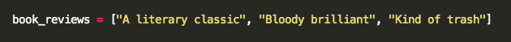
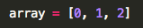
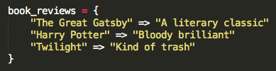
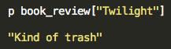

Phase 0: Week 4
Arrays, Hashes, Literature Suggestions...
October 26th, 2015
[Arrays!]
We all love lists. It makes us feel organized. Making a list makes us feel like we accomplised something even if we did absolutely nothing productive that day (does Netflix count as productive?). We're only human after all.
Now you're asking me, what in the world does this have to do with programming? Well feast your eyes on THIS.

At this point perhaps you've think I've gone mad. Have I intentionally given you a list of book reviews that aren't associated with anything? Will this be a fantastically entertaining guessing game for you? Perhaps. (FORESHADOWING!) I'm sure it was more likely, however, that you realized how incredibly efficient it was to stick these 3 values into a list, and thus eliminating the need to create 3 different variables for each review. How inefficient that would have been, creating a variable called bookreview_1, bookreview_2, and so on. That is the beauty of an array, which is exactly what is pictured above. An array contains a list of values contained within square brackets, and is normally given a name that describes its contents. In this case we have a list of book reviews.
There are a number of methods that can be assigned to arrays, which is incredibly useful in manipulating the data that is stored within the list. How does one retrieve a value from the list, you ask? You simply call for the value's corresponding index within the array. The first value in the list corresponds to index 0, the second to index 1, and the third to index 3. As you may have noticed, this is a zero-based numbering sequence, where the first value corresponds to 0 instead of 1.

{Hashes!}
So, what exactly do hashes do if arrays are so efficient? Well, as you may or may not have noticed, predicting what book was associated with each of the reviews must have been slighty difficult. You may have guessed "Hamlet", "The Fellowship of the Ring", "Fifty Shades of Grey", in which case I definitely agree, but unfortunately you are incorrect. What if I wanted to have another piece of information stored with my value? That is where hashes come in.

I'm so sorry if you actually enjoyed Twilight. No judgement, really. Sparkling vampires just aren't my thing.
Hashes are made up of a list of key/value pairs. The keys in this case are books, and the values their respective book reviews. Instead of accessing the values in the list through indices, you can think of a key as a kind of customized index that you name to give its more specificity. So say you want to return the value from a hash: you would use the key associated with the value. Oh, so you forgot what my review was on Twilight, huh?

Hope this quick review on the differences between arrays and hashes was helpful. Come back for updated information, and more blog posts to come!